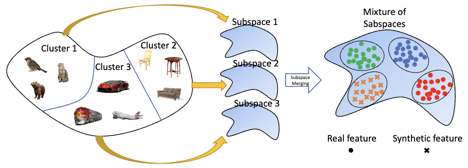

Research Areas
Vision-Language Models
CLIP adaptation, prompt-guided generation, VLM test-time adaptation
6 papers · CVPR, AAAI, BMVC, CVIU, DICTA
Knowledge Distillation
Dynamic trade-off optimization, logit calibration, subspace methods
4 papers · ICLR, WACV, TMLR, DICTA
3D Point Clouds
Zero-shot recognition, capsule networks, pruning, classification
10 papers · IJCV, ECCV, WACV, BMVC, MVA
Few-Shot & Incremental Learning
Semantic-aware distillation, synthesized features, 3D class-incremental
6 papers · CVPR, ICCV, ECCV, ACCV
Test-Time Adaptation
Continual domain adaptation, backprop-free methods, denoising diffusion
5 papers · CVPR, AAAI, WACV, BMVC
Applied AI
Satellite atmospheric correction, glaucoma diagnosis, IC design
3 papers · US Patent, DICTA
News
- Our paper "Fighting Hallucinations with Counterfactuals: Diffusion-Guided Perturbations for LVLM Hallucination Suppression" has been accepted to CVPR'26
- I am serving as Doctoral Consortium Chair for BMVC 2026, the 37th British Machine Vision Conference, held in Lancaster, UK
- Our US patent "Atmospheric Correction" (US App. 19/266,579) has been published — US Patent 2026
- Our paper "DTO-KD: Dynamic Trade-off Optimization for Effective Knowledge Distillation" has been accepted as an Oral presentation at ICLR'26
- Our paper "Adapt-As-You-Walk Through the Clouds: Training-Free Online Test-Time Adaptation of 3D Vision-Language Foundation Models" has been accepted to AAAI'26
- Our paper "SDMD: Subspace-Driven Model Distillation in Indefinite Inner Product Spaces" has been accepted to WACV'26
- I have started a new position as Senior AI/ML Scientist at Macquarie University's Silicon Platforms Lab starting from August 2025
- Our paper "LumiNet: Perception-Driven Knowledge Distillation via Statistical Logit Calibration" has been accepted to TMLR'25
- Our papers "ETTA: Efficient Test-Time Adaptation for Vision-Language Models" and "Task Progressive Curriculum Learning" have been accepted to BMVC'25
- Our paper "Test-Time Adaptation of 3D Point Clouds via Denoising Diffusion Models" has been accepted to WACV'25
- Our paper "Canonical shape projection is all you need for 3d few-shot class incremental learning" has been accepted to ECCV'24
- Our paper "Backpropagation-free Network for 3D Test-time Adaptation" has been accepted to CVPR'24
- Our paper "Continual test-time domain adaptation via dynamic sample selection" has been accepted to WACV'24
- Our paper "Foundation Model-Powered 3D Few-Shot Class Incremental Learning via Training-free Adaptor" has been accepted to ACCV'24
- Our paper "3D Point Cloud Network Pruning: When Some Weights Do not Matter" has been accepted to BMVC'24
- Our paper "3D scene generation for zero-shot learning using ChatGPT guided language prompts" has been accepted to CVIU'24
- Our papers "Efficient Atmospheric Correction" and "Enhancing Glaucoma Diagnosis" have been accepted to DICTA'24
Education
2016 — 2022
Ph.D., Engineering and Computer Science, Australian National University (ANU)
Thesis: Exploring 3D Data and Beyond in a Low Data Regime
Supervisors: Dr. Lars Petersson, Dr. Dylan Campbell, Dr. Mehrtash Harandi
Supervisors: Dr. Lars Petersson, Dr. Dylan Campbell, Dr. Mehrtash Harandi
2009 — 2011
M.Sc., Computer Science, Amirkabir University of Technology
Thesis: 3D Face Recognition Robust to Pose Variation
Supervisor: Dr. Karim Faez
Supervisor: Dr. Karim Faez
2004 — 2008
B.Sc., Electrical Engineering, Shiraz University of Technology
Thesis: Microcontroller-Based Electronic Calendar System
Supervisor: Dr. Mohammad Sadegh Hadaegh
Supervisor: Dr. Mohammad Sadegh Hadaegh
Experience
2025 — Present
Senior AI/ML Scientist, Macquarie University
2024 — Present
Adjunct Lecturer, Australian National University (ANU)
2024 — Present
Adjunct Senior ML Scientist, University of Technology Sydney (UTS)
2020 — 2025
Computer Vision Scientist, CSIRO Data61
Publications
Citations Over Time
Citation Metrics
Total Citations
930
h-index
12
i10-index
13
Publication List by Year
2026
-

Fighting Hallucinations with Counterfactuals: Diffusion-Guided Perturbations for LVLM Hallucination Suppression
Hamidreza Dastmalchi, Aijun An, Ali Cheraghian, Hamed Barzamini
CVPR 2026 Rank A* -

DTO-KD: Dynamic Trade-off Optimization for Effective Knowledge Distillation
Zeeshan Hayder, Ali Cheraghian, Lars Petersson, Mehrtash Harandi, Richard Hartley
ICLR 2026 Oral Rank A* -

Adapt-As-You-Walk Through the Clouds: Training-Free Online Test-Time Adaptation of 3D Vision-Language Foundation Models
Mehran Tamjidi, Hamidreza Dastmalchi, Mohammadreza Alimoradijazi, Ali Cheraghian, Aijun An, Morteza Saberi
AAAI 2026 Rank A* -

SDMD: Subspace-Driven Model Distillation in Indefinite Inner Product Spaces
Zeeshan Hayder, Ali Cheraghian, Lars Petersson, Mehrtash Harandi
WACV 2026 Rank A
2025
-

LumiNet: Perception-Driven Knowledge Distillation via Statistical Logit Calibration
MI Hossain, MM Lutfe Elahi, S Ramasinghe, A Cheraghian, F Rahman, N Mohammed, S Rahman
TMLR 2025 Rank A* -

ETTA: Efficient Test-Time Adaptation for Vision-Language Models through Dynamic Embedding Updates
H Dastmalchi, A An, A Cheraghian
BMVC 2025 Rank A -

Task Progressive Curriculum Learning for Robust Visual Question Answering
A Akl, A Khamis, Z Wang, A Cheraghian, S Khalifa, K Wang
BMVC 2025 Rank A -

Test-Time Adaptation of 3D Point Clouds via Denoising Diffusion Models
H Dastmalchi, A An, A Cheraghian, S Rahman, S Ramasinghe
WACV 2025 Rank A
2024
-

Backpropagation-free Network for 3D Test-time Adaptation
Y Wang, A Cheraghian, Z Hayder, J Hong, S Ramasinghe, S Rahman
CVPR 2024 Rank A* -

Continual test-time domain adaptation via dynamic sample selection
Y Wang, J Hong, A Cheraghian, S Rahman, D Ahmedt-Aristizabal
WACV 2024 Rank A -

Canonical shape projection is all you need for 3d few-shot class incremental learning
A Cheraghian, Z Hayder, S Ramasinghe, S Rahman, J Jafaryahya
ECCV 2024 Rank A* -

Foundation Model-Powered 3D Few-Shot Class Incremental Learning via Training-free Adaptor
S Ahmadi, A Cheraghian, M Saberi, MT Abir, H Dastmalchi, F Hussain
ACCV 2024 -

3D Point Cloud Network Pruning: When Some Weights Do not Matter
A Biswas, MI Hossain, MM Elahi, A Cheraghian, F Rahman
BMVC 2024 Rank A -

3D scene generation for zero-shot learning using ChatGPT guided language prompts
S Ahmadi, A Cheraghian, TF Chowdhury, M Saberi, S Rahman
CVIU 2024 Rank A -

Efficient Atmospheric Correction for Onboard Processing Using Knowledge Distillation and Model Compression
M Zhang, A Cheraghian, Y Qin, D Benn, T Rollan, N Habili
DICTA 2024 -

Enhancing Glaucoma Diagnosis through Vision-Language Models and Large Language Model Descriptions
HY Bae, M Saberi, S Shariflou, M Kalloniatis, J Phu, A Agar, A Cheraghian
DICTA 2024
2023
-

ChatGPT-guided Semantics for Zero-shot Learning
FH Shubho, TF Chowdhury, A Cheraghian, M Saberi, N Mohammed
DICTA 2023
2022
-
Zero-shot learning on 3d point cloud objects and beyond
A Cheraghian, S Rahman, TF Chowdhury, D Campbell, L Petersson
IJCV 2022 Rank A* -

Few-shot class-incremental learning for 3d point cloud objects
T Chowdhury, A Cheraghian, S Ramasinghe, S Ahmadi, M Saberi
ECCV 2022 Rank A* -

Prompt-guided scene generation for 3d zero-shot learning
M Nasiri, A Cheraghian, TF Chowdhury, S Ahmadi, M Saberi, S Rahman
DICTA 2022
2021
-

Semantic-aware knowledge distillation for few-shot class-incremental learning
A Cheraghian, S Rahman, P Fang, SK Roy, L Petersson, M Harandi
CVPR 2021 Rank A* -

Synthesized feature based few-shot class-incremental learning on a mixture of subspaces
A Cheraghian, S Rahman, S Ramasinghe, P Fang, C Simon, L Petersson
ICCV 2021 Rank A* -

Learning without forgetting for 3d point cloud objects
T Chowdhury, M Jalisha, A Cheraghian, S Rahman
IWANN 2021
2020
-

Transductive zero-shot learning for 3d point cloud classification
A Cheraghian, S Rahman, D Campbell, L Petersson
WACV 2020 Rank A
Earlier Publications
-

Zero-shot learning of 3d point cloud objects
A Cheraghian, S Rahman, L Petersson
MVA 2019 -

3dcapsule: Extending the capsule architecture to classify 3d point clouds
A Cheraghian, L Petersson
WACV 2019 Rank A -

Surface geodesic pattern for 3D deformable texture matching
F Hajati, A Cheraghian, S Gheisari, Y Gao, AS Mian
Pattern Recognition 2017 Rank A*
Ask Me Anything
Have questions about my research or publications? Chat with my AI assistant.
Research areas
Publications
Career journey
Collaborate
Start Conversation →